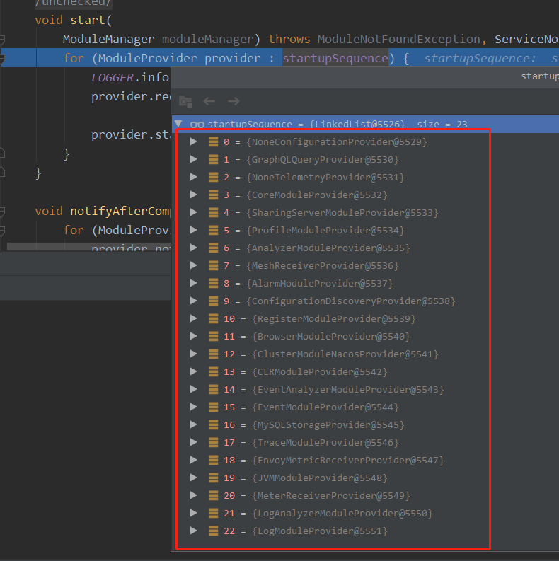

2 minutes
Skywalking-1 服务端启动流程简述

服务端启动流程
启动入口
- apm-dist apm-dist-es7 中表示发布时使用哪个启动类，对应启动的为 oap-server/server-starter oap-server/server-starter-es7, 实际最终都是以 opa-server/server-bootstrap 模块启动：
OAPServerBootstrap#start()
启动方法点： OAPServerBootstrap.start()
- 获取启动模式： 通过系统属性
-Dmode=来获取，并且设置启动模式init: 做所有初始化的事情，然后程序退出no-init: 正常启动，不需要做存储层初始化（比如 es 存储的话就创建索引，索引模板等； mysql 的话就创建表结构等）
- 构造配置加载类， ApplicationConfigLoader， 构造模块管理器 ModuleManager, 在这个地方， ApplicationConfigLoader 实现于 ConfigLoader , 其中 T 的具体类型为 ApplicationConfiguration， 其中定义 load 方法，表示如何加载配置文件得到 T，
- 2.1 使用 configLoader.load() 加载获取配置类 ApplicationConfiguration, 下面是具体的加载逻辑：
- 2.1.1 构造空的 ApplicationConfiguration 实例， 执行
loadConfig（configuration）对该实例填充内容 - 2.1.2 读取
applicaition.yml文件， 使用 yml 工具转换成Map<String, Map<String, Object>>对象， 其中， application.yml 文件也是按照模块进行定义的； - 2.1.3 模块中有配置项为
selector: 表示此模块使用具体哪个来子功能来实现，比如 存储可以使用 h2, mysql, es/es7, 集群功能可以使用 nacos/zk/k8s 等 对每个模块的配置进行 selector 的加载， 具体是取 selector 值对应 key 的 配置， 非该 value 的 配置都会从 configuration 中移除，因为也是无用的 如果禁用某个模块，则将 selector 置为 “-"; 如果 selector 没有禁用，并且配置也找不到，则会抛错；会将无用的模块也移除 - 2.1.4 配置
- 2.1.5 执行
overrideConfigBySystemEnv，通过系统属性覆盖 module 和 provider 的配置 - 2.1.6 默认启动时最终定位 23 个 module
- 2.1.1 构造空的 ApplicationConfiguration 实例， 执行
- 2.2 然后调用模块管理器 manager 的 init 方法使用加载获取到的 ApplicationConfiguration 进行初始化
- 2.2.1 通过 java 原生的
service SPI机制获取 所有的 ModuleDefine 和 ModuleProvider - 2.2.2 遍历存在于
ApplicationConfiguration中的 module， 并执行 module 的 prepare 方法，一下 prepare 方法逻辑：- 2.2.2.1 遍历 moduleProvider, 找到所属该 module 的 provider
- 2.2.2.2 设置 moduleDefine 的 loadedProvider 为上一步骤找出的 provider （每个 module 对应一个 对象， 每个对象都会有一个 provider）， 每个 provider 都会有 moduleManager(全局一个) 的引用， 并且持有自身所属 module 的引用
- 2.2.2.3 从 applicationConfiguration 中复制属性到 loadedProvider 中；
- 2.2.2.4 loadedProvider 也执行自己的 prepare() 方法， 每个 provider 都有自己的实现，具体得看每一个 provider 的逻辑
- 2.2.3 moduleDefine 的 prepare 方法执行完后就放入 loadModules 这个 map 中， key 为 module,name(), value 为 module 本身
- 2.2.4 整个的
prepare阶段完成，isInPrepareStage也置为 false - 2.2.5 通过加载的
loadedModules构造 BootstrapFlow， 执行 bootstrapFlow 的start（moduleManager），然后执行通知- 2.2.5.1 构造 BootstrapFlow
- 2.2.5.1.1 持有所有加载的 modules 的引用，构造空的 ModuleProvider 的 LinkedList: startupSequence
- 2.2.5.1.2 遍历 modules， 拿到所有的 providers，provider 中的方法 requiredModules 定义了它所依赖的模块， 对这所有的模块和 providers 进行处理 （4层循环处理），最终按照依赖顺序放进 startupSequence 的 链表中
- 2.2.5.2
BootstrapFlow的start执行, 遍历startupSequence链表，依次执行每个 provider 的 start() 方法 - 2.2.5.3
BootstrapFlow的notifyAfterComplete， 遍历startupSequence链表，依次执行每个 provider 的 notifyAfterCompleted() 方法
- 2.2.5.1 构造 BootstrapFlow
- 2.2.1 通过 java 原生的
启动流程综述
- 通过配置文件和 SPI 机制加载 module 及 moduleProvider
- 构造 moduleManager 执行初始化，对 module 的 provider 执行
prepare() 方法 - 构造 bootstrapFlow 然后捋清 provider 的依赖形成一个具有先后顺序链表，
- a. 先遍历链表依次执行每个 provider 的
start() 方法， - b. 最后再遍历链表依次执行每个 provider 的
notifyAfterCompleted() 方法
- a. 先遍历链表依次执行每个 provider 的
后面依次分析各个 provider 的逻辑
默认配置下，startupSequence 的 provider 链表：
NoneConfigurationProvider ConfigurationModule
GraphQLQueryProvider QueryModule
NoneTelemetryProvider TelemetryModule
CoreModuleProvider CoreModule
SharingServerModuleProvider SharingServerModule
ProfileModuleProvider ProfileModule
AnalyzerModuleProvider AnalyzerModule
MeshReceiverProvider MeshReceiverModule
AlarmModuleProvider AlarmModule
ConfigurationDiscoveryProvider ConfigurationDiscoveryModule
RegisterModuleProvider RegisterModule
BrowserModuleProvider BrowserModule
ClusterModuleNacosProvider ClusterModule
CLRModuleProvider CLRModule
EventAnalyzerModuleProvider EventAnalyzerModule
EventModuleProvider EventModule
MysqlStorageProvider StorageModule
TraceModuleProvider TraceModule
EnvoyMetricReceiverProvider EnvoyMetricReceiverModule
JVMModuleProvider JVMModule
MeterReceiverProvider MeterReceiverModule
LogAnalyzerModuleProvider LogAnalyzerModule
LogModuleProvider LogModule
Read other posts